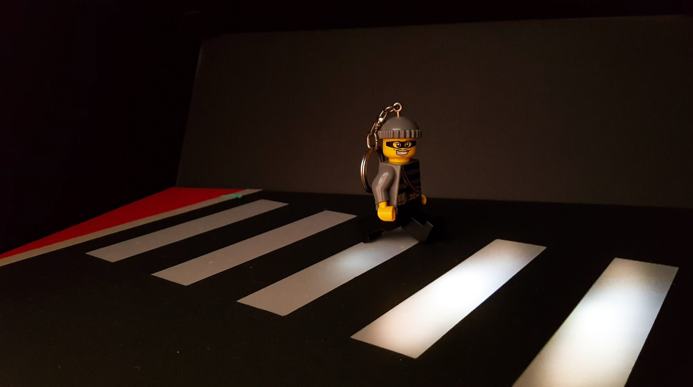
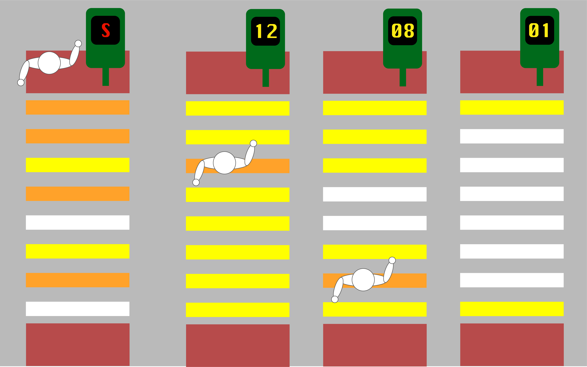
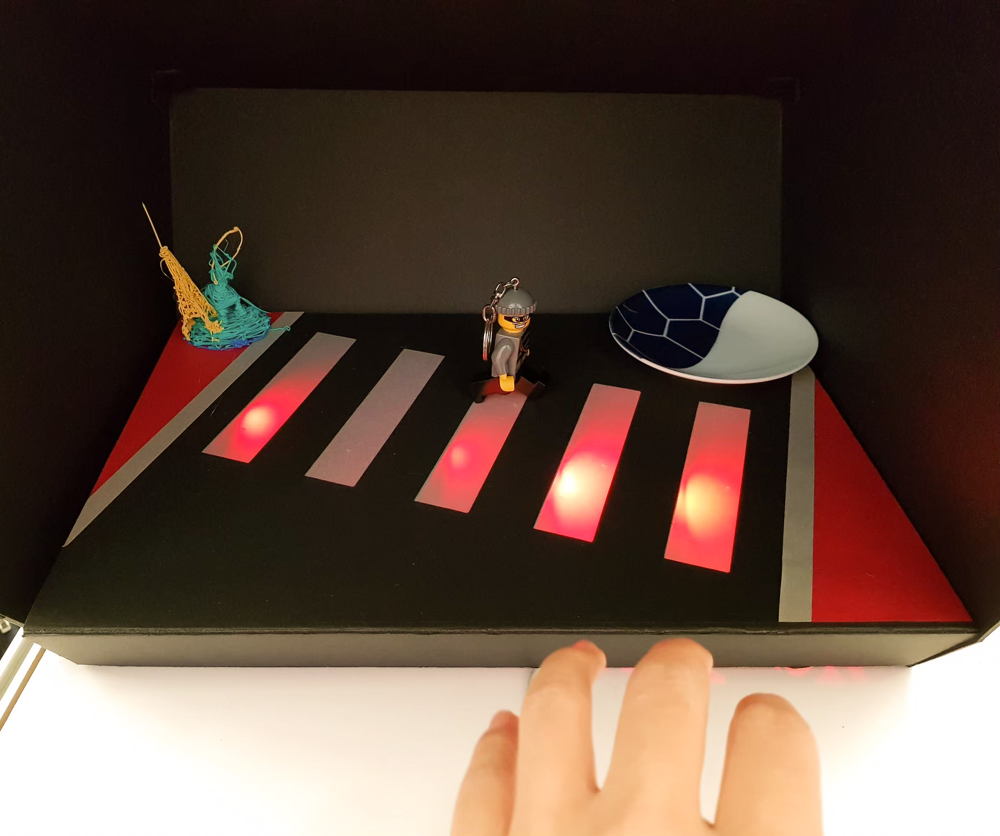
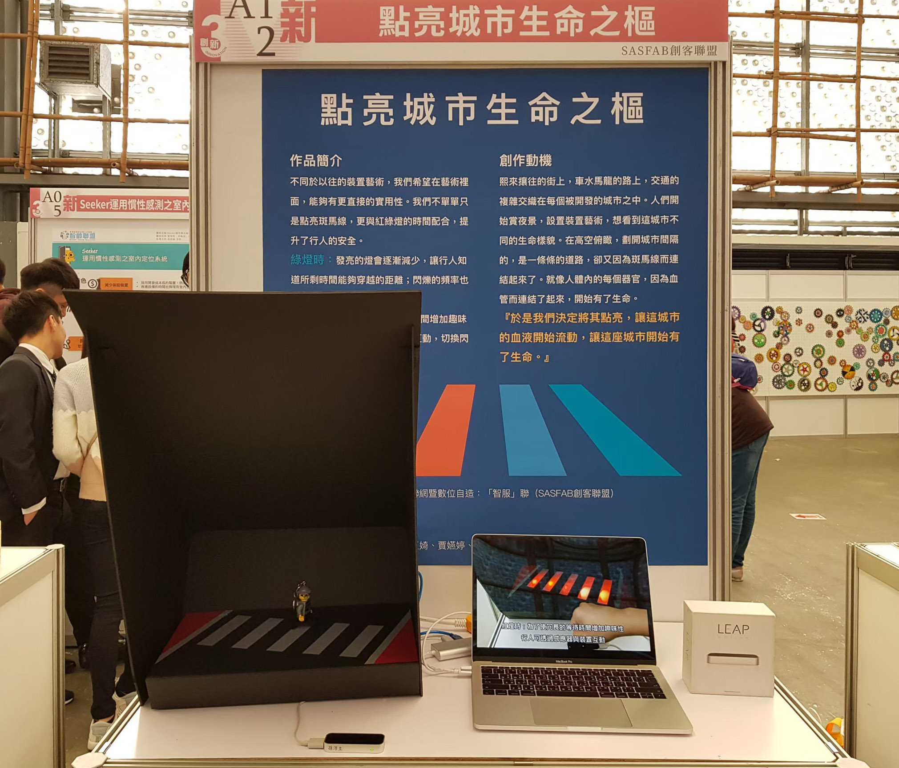

Smart Pedestrian Crossing
Introduction
Smart Xing is a more interactive pedestrian crossing. By replacing the white stripes with lamps, we introducing two functions to the pedestrian crossing.
1. Visualization
Imagine a scene. One day, you walk to an intersection. The traffic light turned green, so you cross the road. You are now at half of the pedestrian crossing. Suddenly, the sign turns red and all you can do is run.
It is surly an aweful experience. To tackle this problem, we came up with the idea of visualizing the remaining time on the stripes. By replacing the white stripes with lamps, pedestrians can directly know how fast they need to walk in order cross the road in the remaining time.
2. Safety
When pedestrians go across, the corresponding strip would shine brighter and change its pattern. Thus, drivers can notice them better.
Demonstration
Processing is used to coordinate Arduino and Leap Motion for controlling the lamp and simulating pedestrians. We were further chosen to attend the result announcement show of the Talent Cultivation Program for Smart Living Industry run by the Ministry of Education in Taiwan.
* In this project, my contribution including making the cardboard model and some part of the Arduino device.